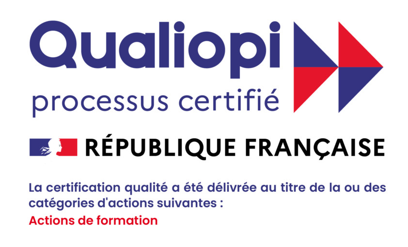

Des formations certifiantes pour sécuriser vos équipes et améliorer la qualité de vie au travail
Voir les formations ```Formatrice indépendante depuis 15 ans, j’accompagne les entreprises dans la prévention santé et le développement des compétences.
Mon parcours mêle activités physiques adaptées, psychologie positive et formation en entreprise avec un objectif : remettre du sens, du bien-être et de la cohésion dans le travail.
Le sport et des expériences comme le Rallye Aïcha des Gazelles m’ont appris le dépassement de soi, la confiance et l’importance du collectif.
Aujourd’hui, j’aide vos équipes à mieux se comprendre, mieux communiquer et mieux travailler ensemble.
La santé mentale au cœur des entreprises est aujourd’hui un enjeu majeur. Face au stress, aux tensions et à l’usure professionnelle, il devient essentiel d’accompagner les équipes.
3 nouvelles formations : PSSM, Gestion des conflits et Prévention de l’usure professionnelle.
Conformité réglementaire : répondre aux exigences légales.
Prévenir et alerter : réduire les risques et les accidents.
Image positive : valoriser l’engagement santé et sécurité.
Valorisation : montée en compétences reconnue.
Motivation : compétences utiles au travail et dans la vie quotidienne.
Certification reconnue : certification SST délivrée selon le référentiel INRS.

EI LEMESLE AUDREY FORMATIONS est certifié Qualiopi au titre de la catégorie : Actions de formation.
Consulter le certificatModalités : Présentiel
Accessibilité : Intra-entreprise – nous contacter pour tout besoin spécifique.
Taux de satisfaction 2025 : 100 %
Taux de recommandation 2025 : 100 %